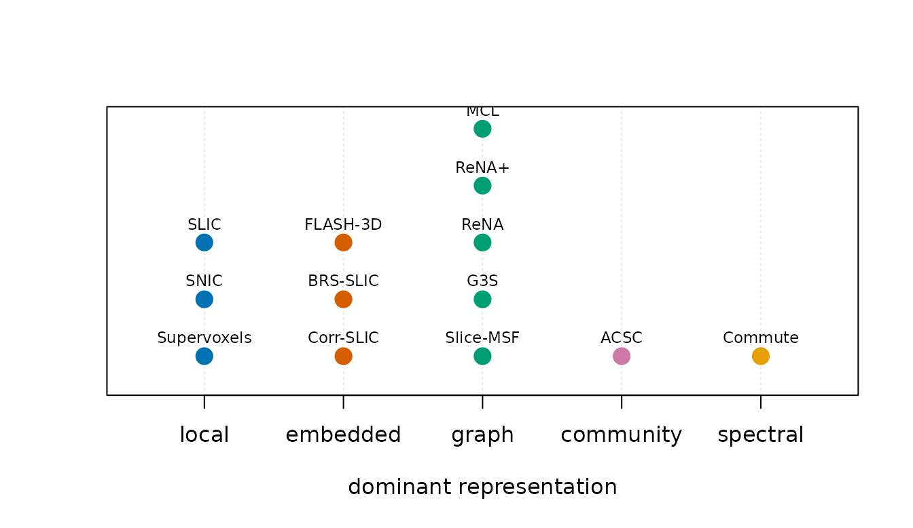

All methods turn voxel-wise features and spatial support into parcels, but they do not optimize the same objective. Choose a family because its assumptions and controls match the analysis—not because an unscoped label calls it “fast” or “high quality.”
Where does each family spend its work?
| Unified method | Dominant work unit | Update pattern |
|---|---|---|
| Supervoxels | local heat kernels | iterative |
| SNIC | seeded local growth | single growth |
| SLIC | local assignment | iterative |
| Corr-SLIC | correlation embedding | iterative |
| BRS-SLIC | sketch plus exact boundary | staged |
| Slice-MSF | spatial graph | single construction |
| FLASH-3D | compressed signatures | iterative |
| G3S | gradient geodesic graph | growth plus refinement |
| ReNA | spatial graph | agglomerative |
| ReNA+ | spatial graph plus refinement | agglomerative |
| MCL | weighted graph diffusion | iterative |
| ACSC | block community graph | community plus refinement |
| Commute | resistance embedding | spectral then cluster |

All 13 unified methods grouped by their dominant representation. Vertical position only separates labels within a group; it is not a score.
What to notice. The methods differ first in representation and update strategy. The axes are categories, not claims about runtime, memory, or accuracy.
What is distinctive about each method?
- SNIC grows clusters from seeds with a priority queue in a non-iterative pass. Its native control is compactness.
- SLIC alternates local assignment and center updates. Its controls include compactness, iteration count, seeding, connectivity, and optional exact-K repair subject to mask topology.
- Corr-SLIC performs local SLIC updates in a compact correlation embedding; its approximation and exact-refinement controls must be reported.
- BRS-SLIC deliberately separates a coarse sketch stage from exact correlation refinement at parcel boundaries.
- Supervoxels iteratively combines feature and spatial heat-kernel similarities. It exposes bandwidths and convergence controls.
- Slice-MSF (experimental) builds normalized DCT sketches and segments a masked spatial graph with cosine dissimilarity; it can stitch across axial slices and combine seeded ensemble runs. It is excluded from automatic recommendations pending release recertification; see the evaluation contract.
- FLASH-3D uses compact temporal signatures and iterative refinement. Hash length and DCT dimension are approximation controls, not generic quality scores.
- G3S uses functional gradients and geodesic growth followed by connected refinement.
- ReNA recursively agglomerates neighbouring regions on a spatial graph; ReNA+ adds its own refinement path. Their weights are method-native rather than the unified spatial blend.
- MCL alternates expansion and inflation on a sparse weighted voxel graph; inflation controls granularity rather than a target-K objective.
- ACSC builds a block graph, applies community detection, and can refine boundaries using a chosen correlation definition.
- Commute embeds the voxel graph using effective-resistance geometry before clustering; its spectral representation has different scaling constraints from local assignment methods.
What should drive the final choice?
Decide which properties are required: connected parcels, an exact target K, cross-slice edges, a particular similarity definition, deterministic output, or a memory ceiling. Then test candidate methods on the same mask and features with defined estimands. Compare clustering methods shows that workflow; Benchmark with a reproducible receipt shows how to attach runtime evidence.